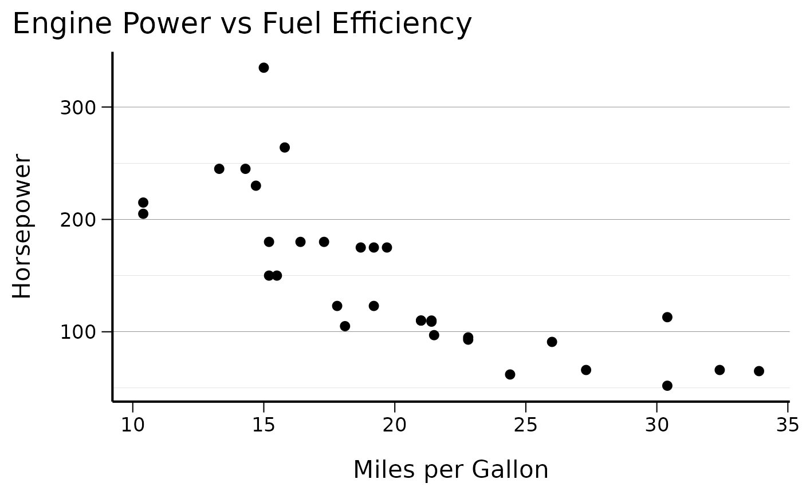
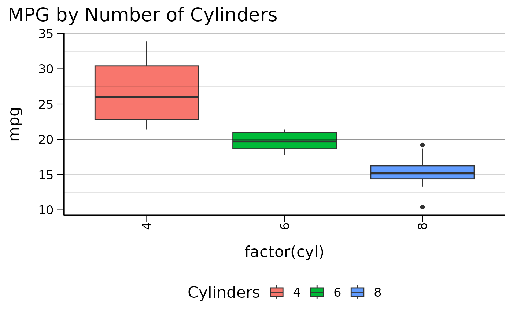
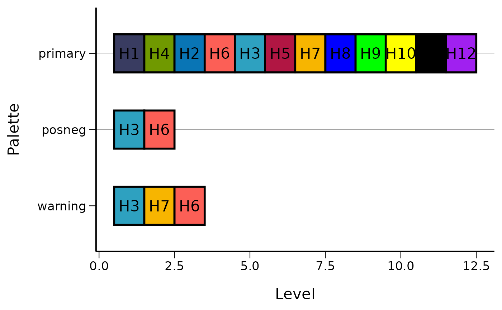
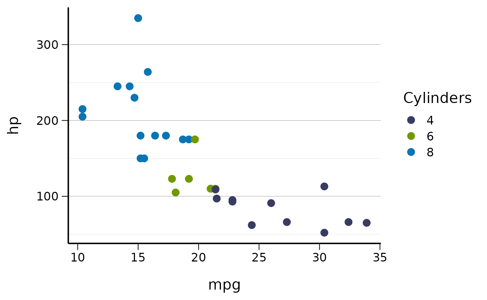
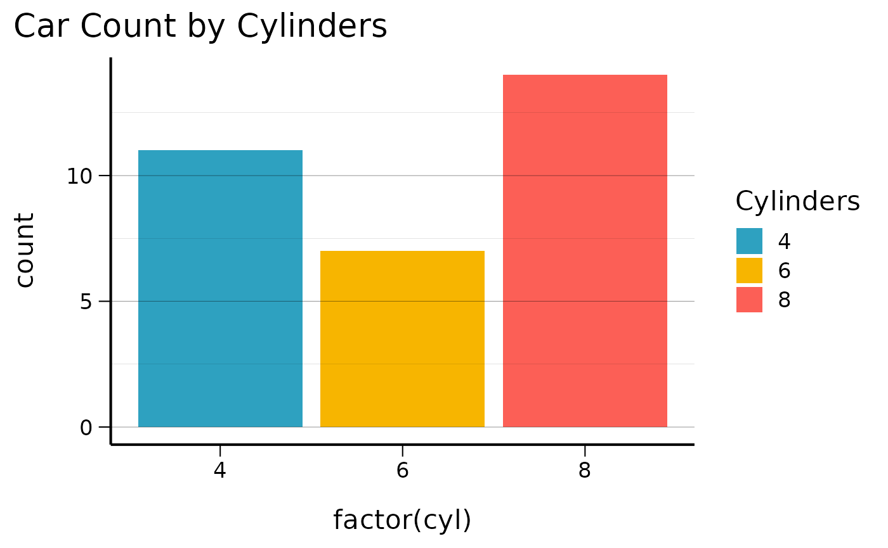
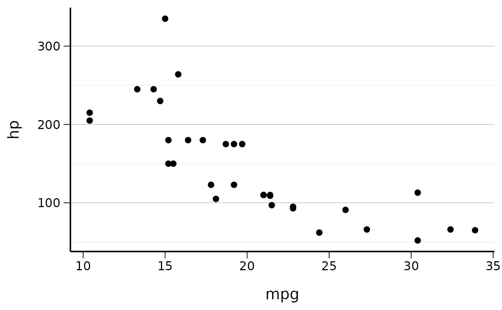
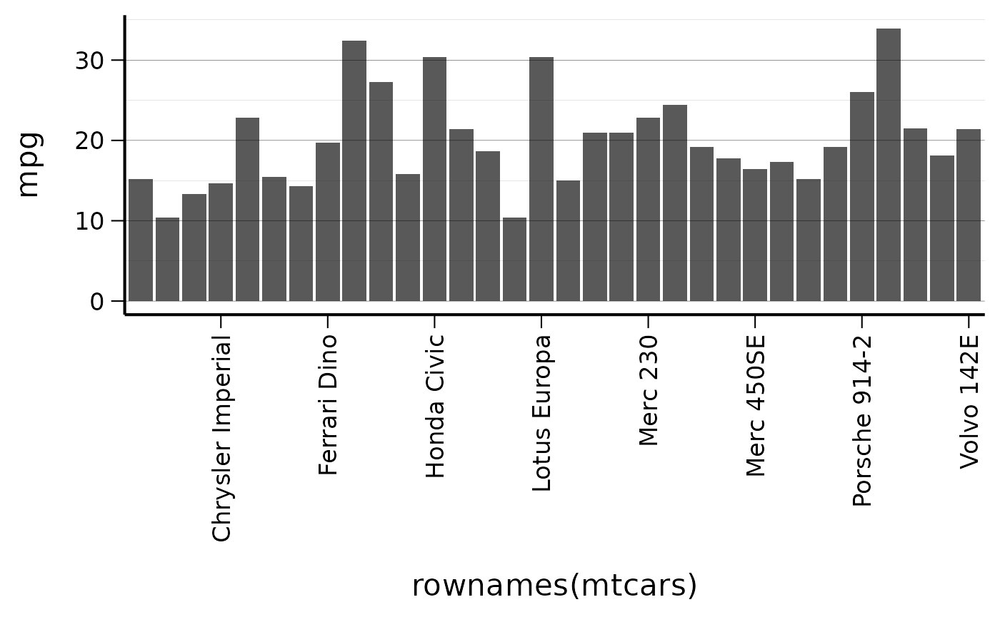

The csstyle package provides a system for standardizing
outputs such as graphs, tables, and reports using CSIDS visual
guidelines. Rather than offering infinite customization options,
csstyle focuses on producing a limited set of outputs that
consistently look the same.
The main theme function theme_cs() provides a clean,
professional appearance:
# Basic scatter plot with CSIDS theme
ggplot(mtcars, aes(x = mpg, y = hp)) +
geom_point() +
theme_cs() +
labs(
title = "Engine Power vs Fuel Efficiency",
x = "Miles per Gallon",
y = "Horsepower"
)
You can customize the theme with various options:
# Theme with bottom legend and vertical x-axis labels
ggplot(mtcars, aes(x = factor(cyl), y = mpg, fill = factor(cyl))) +
geom_boxplot() +
theme_cs(legend_position = "bottom", x_axis_vertical = TRUE) +
labs(title = "MPG by Number of Cylinders", fill = "Cylinders")
The package includes several predefined color palettes:
# View available colors
head(colors$named_colors)
#> H1 H2 H3 H4 H5 H6
#> "#393C61" "#0975B5" "#2EA1C0" "#709900" "#B11643" "#FC5F56"
# Display all palettes
display_all_palettes()
#> Warning: Using `size` aesthetic for lines was deprecated in ggplot2 3.4.0.
#> ℹ Please use `linewidth` instead.
#> ℹ The deprecated feature was likely used in the csstyle package.
#> Please report the issue at <https://github.com/niphr/csstyle/issues>.
#> This warning is displayed once every 8 hours.
#> Call `lifecycle::last_lifecycle_warnings()` to see where this warning was
#> generated.
Use the color scales in your plots:
# Using the primary color palette
ggplot(mtcars, aes(x = mpg, y = hp, color = factor(cyl))) +
geom_point(size = 3) +
scale_color_cs(palette = "primary") +
theme_cs() +
labs(color = "Cylinders")
# Using the warning palette for fills
ggplot(mtcars, aes(x = factor(cyl), fill = factor(cyl))) +
geom_bar() +
scale_fill_cs(palette = "warning") +
theme_cs() +
labs(title = "Car Count by Cylinders", fill = "Cylinders")
The package provides Norwegian number formatting conventions:
# Format numbers with Norwegian conventions
numbers <- c(1234.56, 9876.54, 123.45, NA)
# Basic number formatting (0, 1, 2 decimal places)
format_num_as_nor_num_0(numbers)
#> [1] "1235" "9877" "123" "IK"
format_num_as_nor_num_1(numbers)
#> [1] "1234,6" "9876,5" "123,5" "IK"
format_num_as_nor_num_2(numbers)
#> [1] "1234,56" "9876,54" "123,45" "IK"
# Percentage formatting
percentages <- c(12.34, 56.78, 90.12)
format_num_as_nor_perc_1(percentages)
#> [1] "12,3 %" "56,8 %" "90,1 %"
# Per 100k population rates
rates <- c(123.45, 678.90)
format_num_as_nor_per100k_1(rates)
#> [1] "123,5 /100k" "678,9 /100k"Format dates using Norwegian conventions:
# Current date
format_date_as_nor()
#> [1] "23.12.2025"
# Specific dates
test_date <- as.Date("2023-12-25")
format_date_as_nor(test_date)
#> [1] "25.12.2023"
# Datetime formatting
test_datetime <- as.POSIXct("2023-12-25 14:30:00")
format_datetime_as_nor(test_datetime)
#> [1] "25.12.2023 kl. 14:00"
# Filename-safe datetime
format_datetime_as_file(test_datetime)
#> [1] "2023_12_25_143000"For academic publications, the package also provides journal formatting functions that use international conventions (comma thousands separator, decimal point, ISO 8601 dates):
# Compare Norwegian vs Journal formatting
numbers <- c(1234.56, 9876.54, NA)
# Norwegian format (space thousands, comma decimal, "IK" for NA)
format_num_as_nor_num_1(numbers)
#> [1] "1234,6" "9876,5" "IK"
# Journal format (comma thousands, decimal point, "NA" for NA)
format_num_as_journal_num_1(numbers)
#> [1] "1,234.6" "9,876.5" "NA"
# Percentage comparison
percentages <- c(12.34, 56.78)
# Norwegian: "12,3 %" vs Journal: "12.3%"
format_num_as_nor_perc_1(percentages)
#> [1] "12,3 %" "56,8 %"
format_num_as_journal_perc_1(percentages)
#> [1] "12.3%" "56.8%"
# Per 100k comparison
rates <- c(123.45, 678.90)
# Norwegian: "123,5 /100k" vs Journal: "123.5/100k"
format_num_as_nor_per100k_1(rates)
#> [1] "123,5 /100k" "678,9 /100k"
format_num_as_journal_per100k_1(rates)
#> [1] "123.5/100k" "678.9/100k"
test_date <- as.Date("2023-12-25")
test_datetime <- as.POSIXct("2023-12-25 14:30:00")
# Norwegian format: "25.12.2023"
format_date_as_nor(test_date)
#> [1] "25.12.2023"
# Journal format (ISO 8601): "2023-12-25"
format_date_as_journal(test_date)
#> [1] "2023-12-25"
# Datetime comparison
format_datetime_as_nor(test_datetime) # "25.12.2023 kl. 14:00"
#> [1] "25.12.2023 kl. 14:00"
format_datetime_as_journal(test_datetime) # "2023-12-25 14:30:00"
#> [1] "2023-12-25 14:30:00"Both Norwegian and journal formats support inverse log transformations:
log_values <- c(1, 2, 3)
# Log2 transformations (2^1, 2^2, 2^3 = 2, 4, 8)
format_num_as_nor_invlog2_1(log_values) # "2,0", "4,0", "8,0"
#> [1] "2,0" "4,0" "8,0"
format_num_as_journal_invlog2_1(log_values) # "2.0", "4.0", "8.0"
#> [1] "2.0" "4.0" "8.0"
# Log10 transformations (10^1, 10^2, 10^3 = 10, 100, 1000)
format_num_as_journal_invlog10_1(log_values) # "10.0", "100.0", "1,000.0"
#> [1] "10.0" "100.0" "1,000.0"Use pretty_breaks() for nicely formatted axis
breaks:
ggplot(mtcars, aes(x = mpg, y = hp)) +
geom_point() +
scale_y_continuous(breaks = pretty_breaks(n = 4)) +
theme_cs()
Display every nth label on crowded axes:
ggplot(mtcars, aes(x = rownames(mtcars), y = mpg)) +
geom_col() +
scale_x_discrete(breaks = every_nth(n = 4)) +
theme_cs() +
set_x_axis_vertical()
The csstyle package provides a comprehensive set of
tools for creating consistent, professional visualizations that follow
both Norwegian (CSIDS) and international journal standards. The dual
formatting approach ensures that:
*_as_nor) follow
local conventions for domestic reports and presentations*_as_journal)
follow international standards for academic publicationsBy providing both options while limiting excessive customization, the package ensures consistent output formatting across different publication contexts.
For more detailed examples and function documentation, use
help(package = "csstyle") or refer to individual function
help pages.